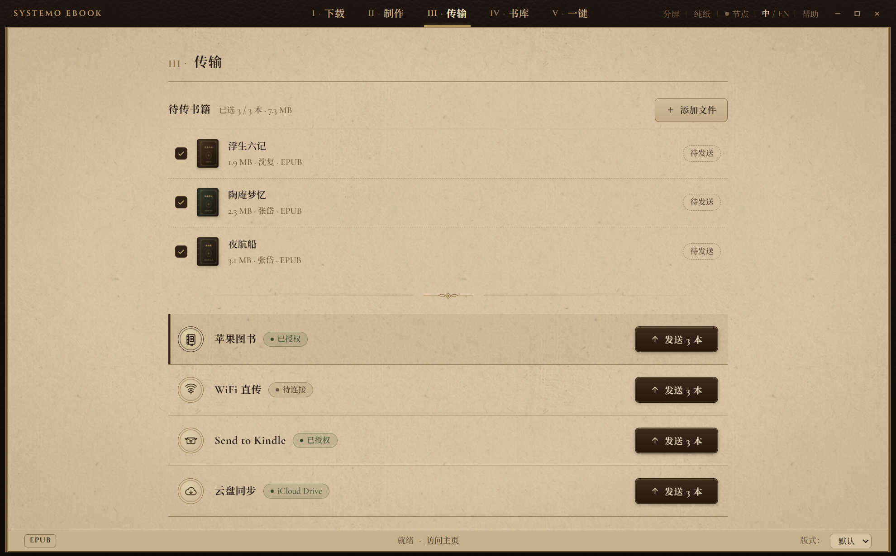
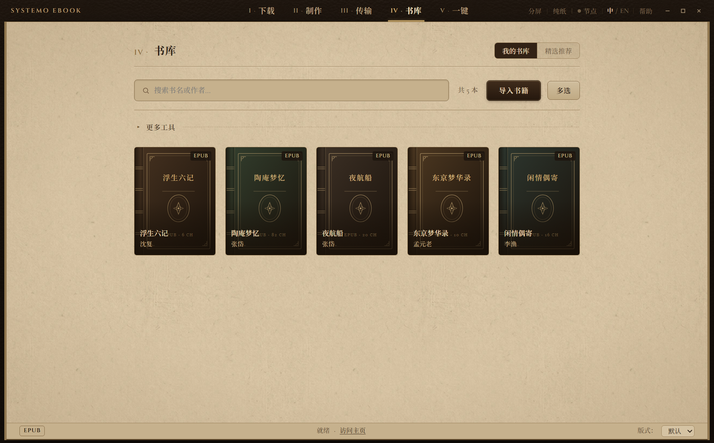
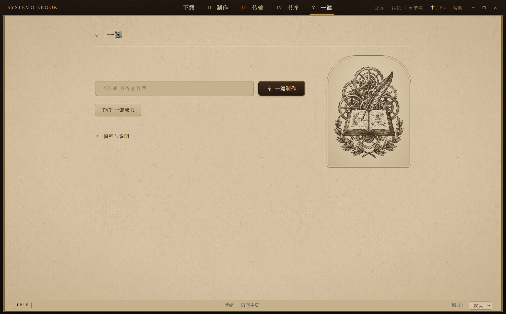
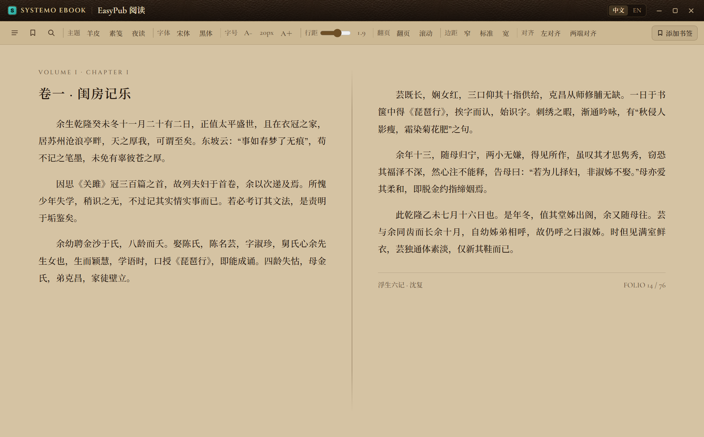

SYSTEMO EBOOK
Windows 本地电子书工具，用于在电脑上找书、整理 TXT、生成 EPUB，并将书传往阅读设备或留在桌面端阅读。

 点击查看大图
点击查看大图
项目说明
在电脑上找网文或整理本地 TXT 传到手机、Kindle 上看，通常要在几个工具之间反复切换：查编码、拆章节、找封面、打包电子书，再按不同设备分别用数据线、邮件或网页网盘传过去。这个工具把这些步骤放在同一个本地窗口里按顺序处理。
项目定位：把网文和本地 TXT 整理成带目录与封面的标准 EPUB，再送到常用的手机、Kindle 或平板，整个处理过程在本地完成，尽量减少来回换软件和反复重排的麻烦。
一本书是怎么处理的
可以单步使用其中任意一页，也可以用连续执行页把整条过程一次跑完。点击下方工位可对照查看对应界面：
-
01
找书或导入 TXT
输入书名（或「书名@作者」）从多个书源检索正文与轻小说分卷，也可以在推荐榜单里挑选，或直接把本地 TXT 拖进窗口。
-
02
识别章节与配封面
按常见卷、章、节规则切分目录，可在列表里手动增删并预览；联网搜作者与候选封面，比对同图取更高分辨率原图，再用本地模型放大清晰度。
-
03
生成 EPUB
把正文、目录、作者信息和封面打包成标准 EPUB，转换结束后自动清空临时下载目录，避免缓存越积越多。
-
04
发往阅读设备
根据手头的设备，在本地云盘目录、局域网 WiFi、Send to Kindle 或百度网盘中转里选一条通道发出。
-
05
留在书库与桌面阅读
成书记录跨导出目录持久保留，支持批量发送或导出；在书库里双击可直接打开内置阅读器。
几个主要部分的做法
获取文本、分章与封面
TEXT & COVER- 下载分流：同时接了普通高速源和精校源；轻小说按榜单分页浏览，点开卡片即可在原位置展开分卷勾选，下载中随时可以取消。
- TXT 分章校验：本地 TXT 标题格式不规范时，切分后可以在章节列表里删掉误切项或补加章节，确认后再打包。
- 封面选优与本地放大：跨来源比对同一张封面并优先取高分辨率原图，清晰度增强走打包在本地的模型，不依赖外部付费接口。
把书传到手机、平板和 Kindle
DELIVERY- 本地云盘目录：自动查找电脑上的 iCloud Drive、OneDrive 或 Google Drive 同步文件夹，把 EPUB 写进其中的 EasyPub 子目录，交给系统云盘同步到苹果或其他设备。
- 局域网 WiFi：手机和电脑连在同一 WiFi 下，通过本机浏览器配合局域网地址把书传到手机，驱动版本会在后台自动匹配更新。
- Send to Kindle：走 Amazon 官方网页通道发送，登录态只保存在本机会话目录里，不记录密码。
- 百度网盘中转：仍习惯经百度网盘传给苹果图书时，授权会直接拉起本机 Chrome 或 Edge 的独立空白会话登录，避免内置窗口被拦截。
书库、内置阅读器与界面布局
LIBRARY & READER- 本地书库：成书记录跨导出目录持久保留，支持多选批量发送、导出或删除；传输队列直接显示 EPUB 里嵌入的封面图。
- 内置阅读器：提供目录、书签、全文检索，可调字号、行距、边距以及翻页或滚动模式，内置羊皮、素笺和夜读三套配色。
- 窗口布局：平时以单页显示；宽屏下可以把顶栏页签拖成左右双页分屏（如左边制作、右边传输），顶栏也提供纯纸背景和中英切换。
余生乾隆癸未冬十一月二十有二日，正值太平盛世，且在衣冠之家，居苏州沧浪亭畔，天之厚我，可谓至矣。东坡云：“事如春梦了无痕”，苟不记之笔墨，未免有辜彼苍之厚。
芸既长，娴女红，三口仰其十指供给，克昌从师修脯无缺。一日于书箧中得《琵琶行》，挨字而认，始识字。刺绣之暇，渐通吟咏，有“秋侵人影瘦，霜染菊花肥”之句。
界面实景
点击任意图片可放大查看，支持键盘左右方向键切换。







获取、当前版本与使用边界
数据与使用边界
BOUNDARIES- 本地处理：文本清洗、分章、封面放大与书库管理都在本机完成；公开源码与发行包均不含个人设置、书库记录、Cookie 或私有代理节点。
- 账号与网络：Kindle 通道需登录自己的 Amazon 账号，百度网盘中转需本机浏览器授权，WiFi 直传要求手机和电脑处于同一局域网；不想绑定网盘时可直接用本地云盘目录或 WiFi。
- 内置代理说明：代理内核默认关闭并会自动避让系统已有代理；公开版本不含私有订阅地址，需要访问受限站点时可沿用系统代理，或自行配置订阅。
从 GitHub Releases 下载完整压缩包，解压到可写目录（如 D:\systemo-ebook，不要放在系统受限目录），保留整个文件夹并双击 EasyPub.exe 即可启动；发布包已带齐后端与模型，首次打开书库为空属正常现象。
免责声明
- 用爱发电：这是一个纯粹为了“让自己看书更爽”而写出来的个人折腾项目，仅供编程学习与技术研究，完全无任何商业盈利行为（不卖课、不收费、无广告）。
- 技术本质：项目中的网文/轻小说下载与封面搜刮功能，本质上是对公开网络信息的个人离线缓存与自动化重排（相当于用代码替你完成了“打开网页 ➔ 摘录文字 ➔ 加上封面排成EPUB”的机械劳动），旨在解决多设备阅读的排版与传输痛点，并非为了建立盗版分发平台。
- 版权倡导：好故事值得被温柔对待，更值得被付费支持。本工具生成的电子书仅限个人离线自用与护眼设备转码，严禁用于任何形式的二次分发、传播或商业牟利。看书遇到喜欢的作品，请一定去正版平台订阅支持原作者！